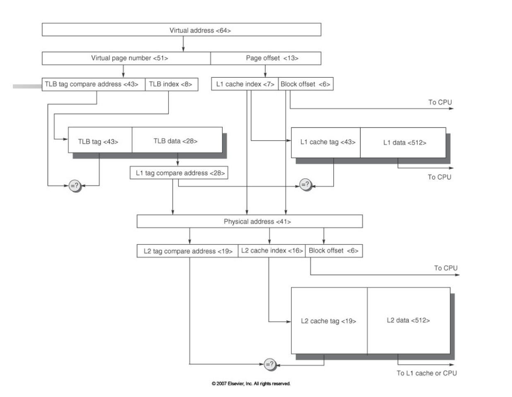

chap2: Memory Hierachy Design
目录
- cache 基础概念（与计组重合）
- cache 优化方法
cache 基础概念
这块常考大题，比如计算地址长度，计算 AMAT，计算 miss 次数等。
cache 的分类和地址的计算方法
Warning
这个表记不清了打算等上计组再补。
| 类别 | 解释 | 标记项结构 | 地址计算 | 优点 | 缺点 |
|---|---|---|---|---|---|
| direct-mapping 直接映射 | |||||
| fully associative 全关联 | |||||
| 2^n-set associative 2^n路组关联 |
- 标记项结构: cache 里的数据和标记项是分成两个（或更多，见王道）存储的，然后标记项因为占用额外的空间所以就是所谓的 overhead
cache write 的处理方法
| write 策略 | 解释 | 经常搭配的 write-miss 策略 | 解释 |
|---|---|---|---|
| write through | 每次写数据时既写在cache也写在main memory。好处是cache和main memory总是一致的，但是很慢。可以通过引入一个write buffer来改进。 | write around（也叫non-allocate） | 考虑到既然本来就要去一次main memory，不如直接写在里面，不再拿到cache里了。 |
| write back | 只将修改后的内容放在cache里，该block要被覆盖的时候再写回内存。这种情况需要一个额外的dirty bit来记录这个cache是否被更改过，从而直到被覆盖前是否需要被写回内存。 | write allocate | 像read miss一样先把block拿到cache里再写入 |
cache miss 的种类 （简称为3C）
| 种类 | 解释 |
|---|---|
| compulsory miss | 冷启动失配，刚上电cache是空的，所以不论什么访问都要miss一次。cache越大compulsory miss越多。 |
| capacity miss | cache块的大小不满足程序局部性时发生的失配，称为容量失配。cache块大小增大，容量失配率减小，与关联度无关。 |
| conflict miss | 在采用组关联和直接映像方式的cache中，主存的很多块都映射到cache的同一块，如果某块本来在cache中，刚被替换出去，又被访问到。有点像 OS 里页替换时讲到的“抖动”。关联度越大，Conflict失配越小。 |
cache 优化方法
这块常考选择。
总结性的图

接下来具体讲解每一种优化方法。
首先四大类优化的思路是如何产生的？来自于衡量内存性能的公式：
首先这个公式的意思是，当 CPU 需要内存访问的时候，访问时间的计算方法是： - 如果在 cache 里找到了，即发生 cache hit，那么需要的时间只有 cache 的访问用时即hit_time。 - 如果在 cache 里没找到（此时已经用了一个 hit_time，这就是为什么 hit_time 是 100% 要用掉的），那么就需要去内存里找，去内存里找的用时是这种情况所占的百分比 miss_rate 乘上去内存里找一次的耗时 miss_penalty。
Note
当然题目里还可能会说 "cache 和 memory 是同时访问的"，意思就是 cache 和 memory 一起找，如果 cache 里找到了，就把 memory 访问掐掉，这样在 miss 的情况下是比先在 cache 里找完再去 memory 找更快的。这样的条件下计算 AMAT 就需要把 hit_time 乘上一个 hit_rate，不再是 100% 用掉了。
总之，AMAT 的表达式给我们提供了三种优化的大方向，即 (1)降低 hit_time (2)减小 miss_rate (3)减小 miss_penalty。此外还有一个大方向叫 (4)做并行的 cache，在有的老师的 PPT 里第(4)项好像会拆出两类来讲，不过我们这里就按总共四种大方向来写，跟图一致，比较舒服。
Miss Penalty
Multilevel Caches
经典的内存模型是
这个方法是把它变成
比如小 cache 没找到的先从大 cache 找，大 cache 没找到的再去内存找。此类可能出 AMAT 的计算题，把各种 rate 拎清以后就像何老师说的“当成初中物理题做就行”。Early Resart & Critical Word 1st
众所周知（至少你现在知道了）cache 的一个 block 经常是含有多个 word 的（你可能会恍然大悟有些题目里说的“cache 按 word 编址”是什么意思），而 block 往往是大于 cache 和内存之间的数据线位宽的，也就是说想要替换一个 block，需要在 cache 和内存之间传送好几趟才能把一个 block 替换完。
但是 miss 发生时 CPU 需要的可能只有一个 word，那么可以先把 CPU 需要的这个 word 写回来，让 CPU 先继续跑起来，在 CPU 继续跑的同时再把剩下的 word 写进 cache。
Priority to Read Miss
在使用 write buffer 的情况下，如果 write 的数据很快就要 read，可以先不将 buffer 的数据写进内存，而是等到read的时候直接从buffer里读，读多次之后再一次从buffer里写内存。
其中，write buffer 是一个可以设在 cache 和内存之间的结构，意思是，假设内存只有一个读写端口，写入内存非常慢，那么 cache 可以将需要写到内存的东西先搬到 write buffer 里，然后 cache 先跑着，内存去慢慢写入。
Merging Write Buffer
同样是使用 write buffer 的情况。merging write buffer 就是将在多行可以一次写回的内容合并到一行，以可以一次写回。write buffer 的内容是按 byte 编址的，但内存数据线位宽一般大于 byte，比如一次可以写回一整个 word，那么假如 write buffer 里现在有四行 mem[200], mem[400], mem[208], mem[408]，写回内存就需要四次。但是如果我们把在同一个 word 里的 byte 合并一下，变成 mem[200] mem[208] 和 mem[400] mem[408] 两行，两次写回，就会变快。
Victim Caches
是一种减少 conflict miss 的方法，即替换出去的页先放进这个 victim cache 结构。victim cache 与 cache 是全相关的，有点像一个二级 cache，是一个比一级 cache 慢的 cache。这样如果发生 conflict miss，从这个 victim cache 里取数据比从内存里取更快。
Miss Rate
这一栏的前三个方法都不是很聪明，本质上是在 cache 的三种设计方法中去权衡，而我们知道 cache 的三种 miss 还是此消彼长的，哪一种设计方法都不能完美解决。不过整体而言，from 王道计组，使用合适的 2^n 路组关联时，最好的情况能够几乎兼具直接映射的效率和全关联的命中率。
Larger Block Size
把 cache 的每个块设计得更大，这样每个块存得东西多了，当然 miss_rate 就下降。缺点也很明显，miss_penalty 上升了，因为写起来变慢了。
Larger Cache Size
把 cache 的块数增多，这样存得东西也多了，miss_rate 就也下降。缺点也很明显，冷启动 compulsory miss 上升了；如果不是直接映射，查找时间也上升了。
Higher Associativity
提升组关联数，这样减少 cache 里面的东西被替换出去的概率，减少 conflict miss。缺点也很明显，查找时间增加。
Way-predicting Cache
在组关联设计中，使 cache 具有预测需要查找的 tag 的能力。因为去查需要的数据在组里哪个 tag 比较慢，所以先猜一个 tag 在 cache 里找着，等 tag 准备好后如果猜对了，那么节约了时间，就可以直接 hit。
Pseudo-associative Caches
既是直接映射又是组关联映射的 cache。首先把 cache 当作一个直接映射 cache，第一次查的时候就这么查，最快。但是这种 cache 又同时是一个组关联映射，在 cache 块中放一个额外的标志表示与之关联的其它块，如果 miss 了再去查这些块。这样有一个小的 hit_time 和2^n - 1个大的 pseudo_hit_time，但是平均来说 miss_rate 比直接映射小，hit_time 比组关联映射小。
Compiler Techniques Reduce Cache Misses
用软件方法，优化代码。这里有四个例程，分别叫 Merging Arrays, Loop Interchange, Blocking, 和 Loop Merging。简单的直接用文字描述了。
Merging Arrays
比如我们需要访问的是a[100], b[100], 在同一个循环里连续访问a[i] b[i]即下标相同的项，cache如果一次性放不下两个数组，就会两个数组交替从内存里取出来放到cache里。这时候可以设计成一个结构体数组struct ab { a[100], b[100] }，这样 cache 可以把 a 和 b 相邻地拿进来。减少miss。
Loop Interchange
e.g.
/* Before: 外行内列，一行可以一次被放进内存 */
for (k = 0; k < 100; k = k+1)
for (j = 0; j < 100; j = j+1)
for (i = 0; i < 5000; i = i+1)
M[i][j] = 2 * M[i][j];
/* After: 外列内行 */
for (k = 0; k < 100; k = k+1)
for (i = 0; i < 5000; i = i+1)
for (j = 0; j < 100; j = j+1)
M[i][j] = 2 * M[i][j];
修改后的cache命中率变高了，因为交换后对内存的访问是连续的。一般是行对齐的，最低维是相邻的。
Blocking
适当拆分运算，以配合cache大小。e.g. 矩阵相乘例子。
/* Before */
for (i = 0; i < N: i += 1)
for (j = 0; j < N; j += 1) {
r = 0;
for (k = 0; k < N; k +=1 )
r = r + y[i][k] * z[k][j];
}
/* After */
for (jj = 0 ; jj < N; jj = jj+B)
for (kk = 0; kk < N; kk = kk +B) {
// ...记不清了
for (ii = 0; ii < B; ii ++) {
// 总之这个内层循环只处理一个 B * B 的 block，其中 block 是 cache 能放下的大小
}
}
优化后每次对每一个 block 一次性完成操作。
Loop Merging
比如有两个循环的循环起止条件一样，那么就不要开两个循环了，合并到一个循环里完成。
Parallelism
Non-blocking Caches
cache miss时, 等待内存写回时继续做别的没有冲突的事情，不必要让所有的资源都等待内存。可以让别的块先完成别的指令的需求。比如在处理write miss的时候，允许处理read hit。
主要用于out of order（乱序）的处理器上。
ppt 给的定义是：allows cache to continues to supply hits while processing read misses (hit under miss, hit under multiple miss)
Hardware Prefetching of Instr/Data
可以由硬件控制数据预取，一种类似 branch-prediction 的做法。预测并提前取出可能需要用到的数据放到cache里。
使用prefetching的前提是指令是并行的，cache 也是 non-blocking 的。
Compiler Controlled Prefetching
上面一条预取方法，也可以由程序员和编译器手动指定哪些内容应该被放到cache。
Hit Time
Small & Simple Caches
比如就针对 cache 本身，减小 cache 的复杂度以减小组合逻辑的延迟。当然由于我们之前讨论过的 cache 三个指标的相互制约，是可能会导致其它两个指标变不好的。
Avoiding Address Translation
这里需要分别回忆一下 cache 标记位的结构和 OS 里的页表项。一般本课程中使用的 cache 设计规则都是 "physically tagged, virtually indexed"(PTVI)，意思是，用于查找 cache block 的 tag 整个全都在 page offset 里，这块 offset 字段对于虚拟地址和物理地址来说是完全一样的，只有 page number 需要送进 tlb 去寻找物理帧号。如图。

如果之前的做法是 cache 等到物理帧号找出来、地址翻译完再去查找，就太慢了。既然 tag 不用等到地址翻译就能拿到，可以使地址翻译和 cache 查找同时进行。
Pipelined Cache Access
因为 cache management unit 的操作分为好多步，可以把每步去像流水线一样并行。缺点是会增加系统开销，导致 hit_time 增加，但是好处是前面的指令 miss 时，下一条指令可以并行。
Multi-banked Cache
将多路组关联的每一路的查找并行。
ppt 给的定义是：cache is divided into independent banks that can support simultateous accesses like interleaved memory banks.
Trace Cache
核心逻辑是缓存逻辑上的指令流，而不是缓存物理地址的指令流，从而加快指令的预取。比如分支指令中不去预测里 cache 不会命中的分支，这样节省了 cache 空间，也让相邻的指令在 cache 中也相邻。我的理解它的意思是把 prediction 的功能送给了 cache，如果分支预测预测到了某个跳转指令会发生，那么 cache 就去预取发生的分支后面的数据。